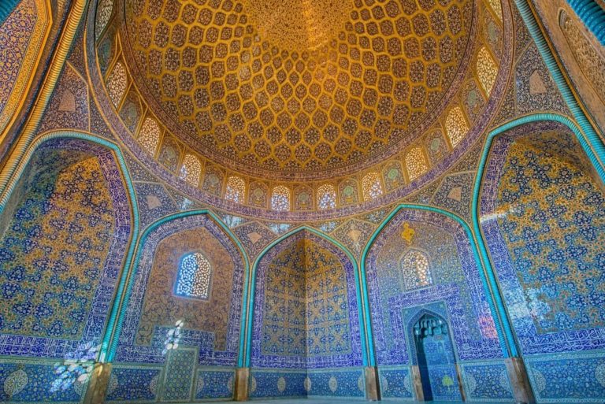
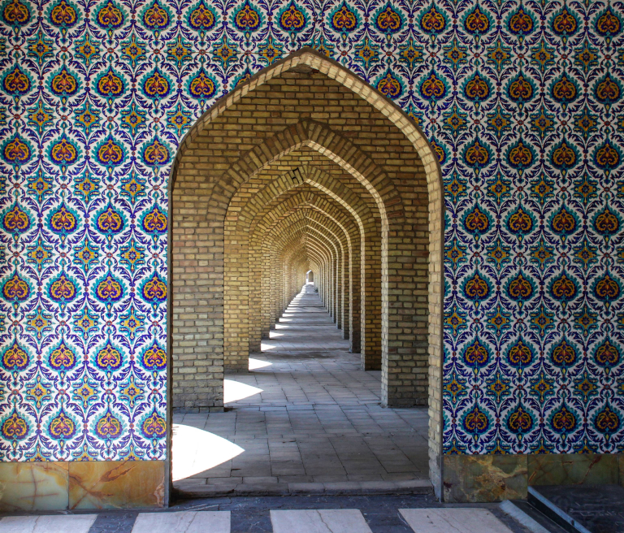
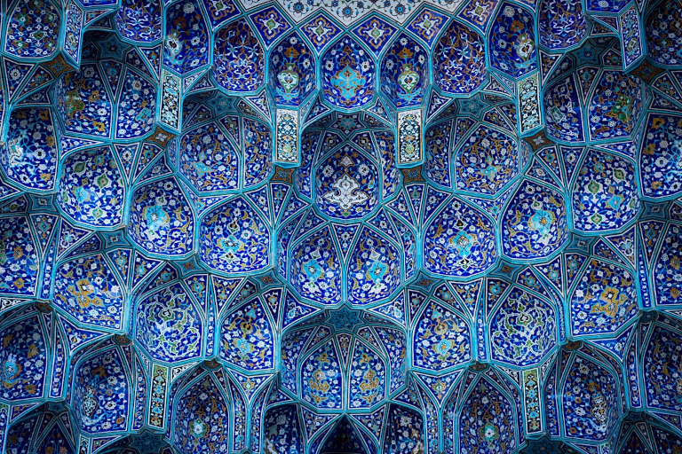

Math in Islamic Art
Islamic art relies heavily on mathematics. Symmetry, repetition, and complex geometric patterns are essential components of Islamic art. Due to the belief that only God can create living forms, many Islamic artists avoid creating representations of humans and animals. Their art, instead, follows naturally occurring patterns and represents nature in ways beyond just their physical qualities. Islamic art is based on geometric shapes and patterns, and the tessellation is one of the most common elements in these art pieces. Tessellations are repeating shapes and patterns, and these patterns sometimes seem to be never ending in Islamic pieces, representing their unbreakable faith.


